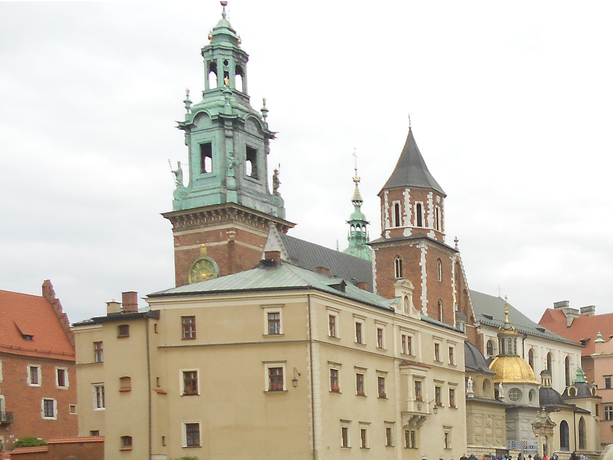

|

|
Для мене Польща – це Краків, моє перше європейське місто, в якому мені довелося побувати кілька разів. Він зачарував мене з першого погляду і я досі вважаю його найкрасивішим європейським туристичним містом.
Краків - дуже старовинне місто Польщі, друге за величиною та кількістю жителів після Варшави. Має свою історію та заворожує коли ти в неї поринаєш. Приїжджаючи сюди, просто вирушайте в старе місто, оглянете визначні пам'ятки Ринкової площі, пройдіть дорогою королів, побродіть по території замку Вавель і помилуйтеся панорамою річки Вісли. Тільки так ви зможете насправді зануритися в його атмосферу. Коли йдеш по старовинним вулицям цього міста, здається, що ти знаходишся не в сучасному світі, а в минулому столітті. Довгий час Краків був столицею Польщі і резиденцією королів, тому в місті багато архітектурних пам'яток: замок і його територія, площі, палаци, храми. Особливого шарму також додають карети з кіньми, яких можна зустріти просто на головній площі та центральних вулицях міста.
Також мене дуже вразила поїздка до однієї з найцікавіших пам'яток Польщі – соляної копальні Велічка, яка знаходиться в околицях Кракова. Це одне з небагатьох місць в світі, де можна опуститися в діючу соляну шахту, прогулятися по 9 рівнів підземних тунелів, подивитися, як саме добувають і обробляють солі.
|

|